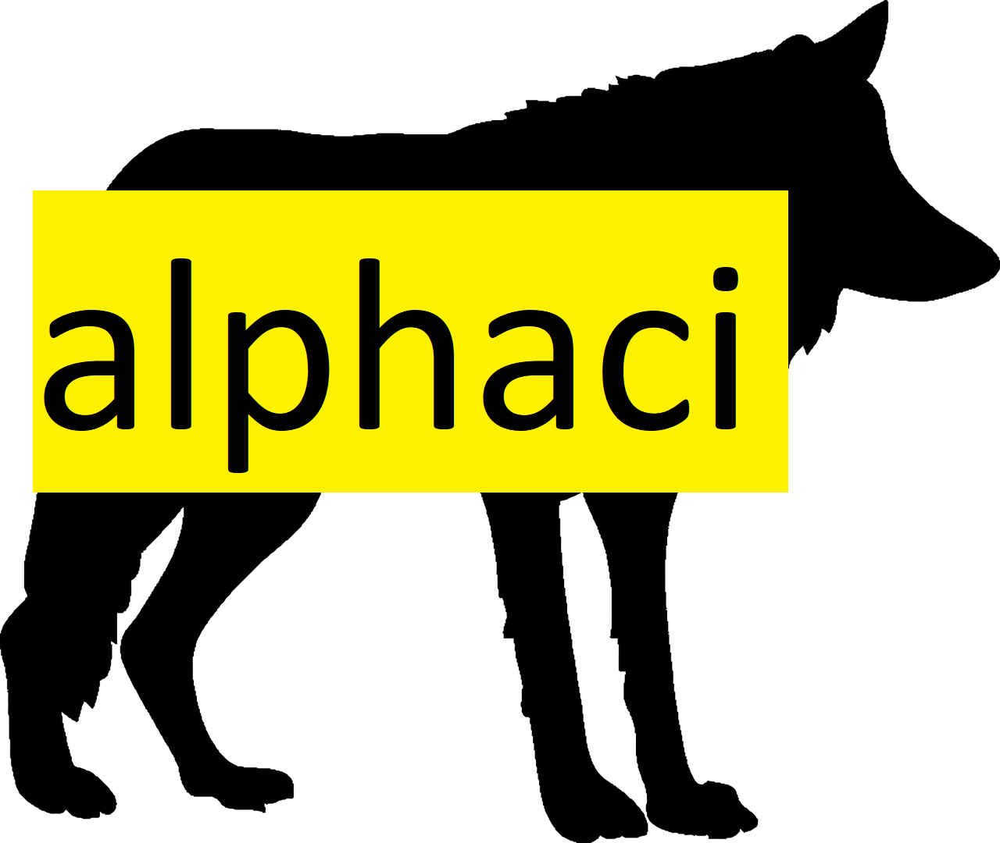

alphaci 


An R package for doing inference with coefficient alpha and standardized alpha. Many methods are supported, with special emphasis on small samples and non-normality.
Installation
The package is not available on CRAN yet, so use the following command from inside R:
# install.packages("remotes")
remotes::install_github("JonasMoss/alphaci")Usage
Call the library function and load some data:
library("alphaci")
library("psychTools")
x <- bfi[, 1:5]
x[, 1] <- 7 - x[, 1] # Reverse-coded item.
head(x)
#> A1 A2 A3 A4 A5
#> 61617 5 4 3 4 4
#> 61618 5 4 5 2 5
#> 61620 2 4 5 4 4
#> 61621 3 4 6 5 5
#> 61622 5 3 3 4 5
#> 61623 1 6 5 6 5Then calculate a confidence interval
alphaci(x)
#> Call: alphaci(x = x)
#>
#> 95% confidence interval (n = 2709).
#> 0.025 0.975
#> 0.6828923 0.7246195
#>
#> Sample estimates.
#> alpha sd
#> 0.7037559 0.5536964Supported techniques
alphaci supports three basic asymptotic confidence interval constructios. The asymptotically distribution-free interval of Maydeu-Olivares, Coffman, and Hartmann (2007), the pseudo-elliptical construction of Yuan and Bentler (2002), and the normal method of Zyl, Neudecker, and Nel (2000).
| Method | Description |
|---|---|
adf |
The asymptotic distribution free method (Maydeu-Olivares, Coffman, and Hartmann 2007). The method is asymptotically correct, but has poor small-sample performance. |
elliptical |
The elliptical or pseudo-elliptical kurtosis correction (Yuan and Bentler 2002). Uses the unbiased sample estimator of the common kurtosis (Joanes and Gill 1998). Has better small-sample performance than adf and normal if the kurtosis is large and \(n\) is small. |
normal |
Assumes normality of \(X\) (Zyl, Neudecker, and Nel 2000). This method is not recommended since it yields too short confidence intervals when the excess kurtosis of \(X\) is larger than \(0\). |
In addition, you may transform the intervals using one of four transforms:
- The Fisher transform, or \(\alpha\mapsto \operatorname{artanh}(\alpha)\). Famously used in inference for the correlation coefficient.
- The \(\log\) transform, where \(\alpha \mapsto \log(1-\alpha)\). This is an asymptotic pivot under the elliptical model with parallel items.
- The identity transform. The default option.
- The \(\arcsin\) transform. This transform might fail when \(n\) is small, as negative values for \(\hat{\alpha}\) is possible, but \(\arcsin\) do not accept them,
The option bootstrap does studentized bootstrapping (Efron 1987) with n_reps repetitions. If bootstrap = FALSE, an ordinary normal approximation will be used. The studentized bootstrap intervals are is a second-order correct, so its confidence intervals will be better than the normal approximation when \(n\) is sufficiently large.
How to Contribute or Get Help
If you encounter a bug, have a feature request or need some help, open a Github issue. Create a pull requests to contribute. This project follows a Contributor Code of Conduct.